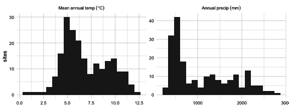
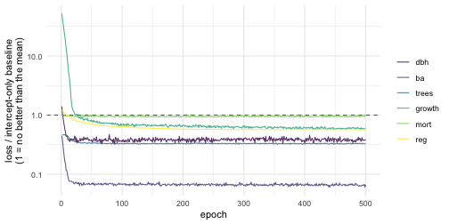
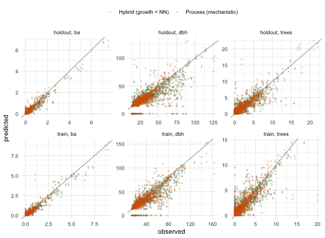
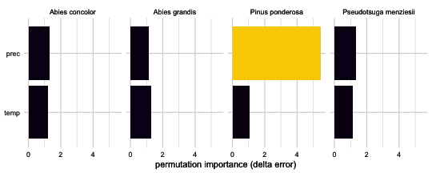

Fitting FINN to forest inventory data (Oregon, US FIA)
Source:vignettes/D-Fit_to_FIA.Rmd
D-Fit_to_FIA.RmdDynamic forest models are usually developed through a combination of encoding ecological knowledge into model structures and parameters. Usually the resulting parameters are then further refined by manual calibration procedures. Here we calibrate FINN directly from data: a subset of the US Forest Inventory & Analysis (FIA) program for Oregon, prepared exactly as in the Preparing your data for FINN vignette.
We fit FINN to 200 sites and evaluate on 200 held-out sites.
The calibration needs a torch backend and takes several minutes, so this vignette is precompiled: the code was run once and its output committed with it. The code you see is exactly the code that produced the output next to it.
library(FINN)
library(torch)
library(data.table)
library(ggplot2)
# Training length. Every epoch simulates the 20 years between the inventories
# for all 200 sites; the convergence section below shows the loss curves and how
# far the parameters still move.
EPOCHS <- 500LThe data
The input tables are a seeded sample of 400 Oregon FIA plots with
their WorldClim climate, split into 200 sites to fit on and 200 holdout
sites for evaluation (?fia_obs_dt). A fitted FINN model
should generalize to other sites, so the holdout is a genuine
out-of-sample test.
# The tables ship with FINN as datasets (?fia_obs_dt), already in FINN's input
# format, so there is nothing to read or prepare.
# --- training sites --------------------------------------------------------
obs_dt <- fia_obs_dt # observations, wide (one column per variable)
env_dt <- fia_env_dt # RAW, untransformed climate
init_trees <- fia_init_trees
species_dt <- fia_species_dt
# --- holdout sites: never seen during fitting ------------------------------
obs_test <- fia_obs_test
env_test <- fia_env_test
init_test <- fia_init_test
# long form of the observations, so later we can match FINN's long predictions
# (sim$long$site) with a single merge()
resp <- c("dbh", "ba", "trees", "growth", "mort", "reg")
to_long <- function(d) melt(d, id.vars = c("siteID", "year", "period_length", "species", "species_name"),
measure.vars = resp, variable.name = "variable", value.name = "obs",
variable.factor = FALSE)
obs_long <- to_long(obs_dt)
test_long <- to_long(obs_test)
cat(sprintf("train: %d sites | holdout: %d sites | %d species | inventory years %s | env years %d-%d\n",
uniqueN(obs_dt$siteID), uniqueN(obs_test$siteID), uniqueN(obs_dt$species),
paste(sort(unique(obs_dt$year)), collapse = " & "), min(env_dt$year), max(env_dt$year)))
#> train: 200 sites | holdout: 200 sites | 11 species | inventory years 10 & 20 & 21 | env years 1-22
species_dt
#> species species_name
#> <int> <char>
#> 1: 1 Pseudotsuga menziesii
#> 2: 2 Pinus ponderosa
#> 3: 3 Pinus contorta
#> 4: 4 Abies concolor
#> 5: 5 Abies grandis
#> 6: 6 Tsuga heterophylla
#> 7: 7 Tsuga mertensiana
#> 8: 8 Lithocarpus densiflorus
#> 9: 9 Alnus rubra
#> 10: 10 Abies amabilis
#> 11: 11 otherFINN simulates the forest in yearly steps. The first
inventory (2001-02) is the starting state at year 0, and the two
remeasurements are compared with the simulated stand 10 and 20 years
later; one site of each sample had its third inventory a year or two
late, at year 21 or 22. Each observation carries
period_length, the years since the previous inventory, and
its growth and mortality are yearly rates:
fit() averages the simulated yearly rates over those years,
and sums the simulated recruits over them for reg. Because
the intervals differ between a few sites, fit() scores
every site over its own window, which it announces when it starts.
unique(obs_dt[, .(siteID, year, period_length)])[, .(sites = .N), by = .(year, period_length)]
#> year period_length sites
#> <int> <int> <int>
#> 1: 10 10 200
#> 2: 20 10 199
#> 3: 21 11 1The environment is supplied in natural units: with
env_autoscale = TRUE (the default) FINN z-standardizes the
predictors internally and reuses the same constants at prediction time,
so raw values are all we ever pass. It has one row per site and
simulated year; the climate here is each plot’s long-term normal, the
same in every year.
ggplot(melt(unique(env_dt[, c("siteID", "temp", "prec")]), id.vars = "siteID",
measure.vars = c("temp", "prec")),
aes(value)) +
geom_histogram(bins = 20, fill = "grey40") +
facet_wrap(~variable, scales = "free", labeller = as_labeller(
c(temp = "Mean~annual~temp~(degree*C)", prec = "Annual~precip~(mm)"), label_parsed)) +
labs(x = NULL, y = "sites") + theme_minimal()
Stand abundance, measured as total basal area per plot (summed over species), against the temperature and precipitation gradients:
# total stand basal area per plot: sum over species, averaged over inventories
site_ba <- obs_dt[, .(ba = sum(ba, na.rm = TRUE)), by = .(siteID, year)][
, .(ba = mean(ba)), by = siteID]
site_env <- env_dt[, .(temp = mean(temp), prec = mean(prec)), by = siteID]
grad <- melt(merge(site_ba, site_env, by = "siteID"),
id.vars = c("siteID", "ba"), measure.vars = c("temp", "prec"),
variable.name = "gradient")
ggplot(grad, aes(value, ba)) +
geom_point(alpha = 0.4, size = 0.9, colour = "grey30") +
geom_smooth(method = "loess", se = FALSE, colour = "firebrick", linewidth = 0.9) +
facet_wrap(~gradient, scales = "free_x", labeller = as_labeller(
c(temp = "Mean~annual~temp~(degree*C)", prec = "Annual~precip~(mm)"), label_parsed)) +
labs(x = NULL, y = "Total basal area per plot") + theme_minimal()
Initial cohorts
Each simulation starts from the observed first inventory. We build the starting state for both samples, the holdout gets its own cohorts, from its own sites.
Nsp <- max(obs_dt$species)
init_cohorts <- makeInitCohorts(init_trees, Nspecies = Nsp)
init_cohorts_test <- makeInitCohorts(init_test, Nspecies = Nsp)
# shared colours for the two model variants, reused by the scatter and ALE panels
model_cols <- c("Process (mechanistic)" = "#1b9e77", "Hybrid (growth = NN)" = "#d95f02")Fit a Process-FINN
In the fully mechanistic configuration every process keeps its
predefined form, while its species and environmental parameters are
learned (optimize* = TRUE) and the formula chooses which
environmental predictors enter the growth, regeneration and mortality
responses. The model is calibrated end-to-end by gradient descent
through the entire simulation.
The four processes are FINN’s defaults, written out here only to give
each a formula: regeneration_capped() is the default
regeneration, a recruitment mean with a fitted carrying capacity
K (see The recruitment cap below). All six
responses are fitted jointly in one fit() call with the
default loss, and this joint fit with the defaults is the calibration we
recommend.
We pass two climate drivers rather than all six
available. ~. would use every column, but the six are
strongly collinear; temp and tempmin correlate
at r = 0.93, prec and precwarmq at 0.86, and
two principal components carry 90% of the variance. Collinear predictors
are not a problem for the fit (that is what ALE is designed
for), but they are a problem for the interpretation below: two
drivers that correlate at 0.93 have no separately identifiable response
curves, so calling each one a “niche” would be reading structure into an
arbitrary split. Two weakly-correlated drivers (r = 0.64) give curves
that mean what the text says they mean. Measured across three seeds on
the earlier ten-year steps, the cost was nothing on growth (0.56 vs 0.55
held out) and ~0.02 on basal area, tree numbers and regeneration.
FINN.seed(42)
m <- finn(
N_species = uniqueN(obs_dt$species),
recruits_dbh = 12.9, # DBH (cm) assigned to a new recruit; ~ FIA's 12.7 cm (5 in) minimum
competition_process = createProcess(~0, FINN::competition, optimizeSpecies = TRUE),
growth_process = createProcess(~ temp + prec, FINN::growth, optimizeSpecies = TRUE, optimizeEnv = TRUE),
regeneration_process = createProcess(~ temp + prec, FINN::regeneration_capped, optimizeSpecies = TRUE, optimizeEnv = TRUE),
mortality_process = createProcess(~ temp + prec, FINN::mortality, optimizeSpecies = TRUE, optimizeEnv = TRUE)
)Balancing the six losses
The objective is the sum of six terms, one per response, and their
raw magnitudes have nothing to do with each other: dbh is a
squared error in cm², growth a squared error on a ratio,
trees a Poisson deviance. Before anything is trained it is
worth seeing what each term would contribute.
fit(epochs = 0) runs the set-up only, the data tensors, the
intercept-only baselines and the weights derived from them, and reports
each response’s share of the objective; nothing is trained and the
parameters stay as they were.
fit(m, env = env_dt, data = obs_dt, init_cohort = init_cohorts, epochs = 0L,
patches = 4, patch_size = 0.06, plot_progress = FALSE)
#> ℹ Using per-site aggregation windows (one backward per batch): period_length varies between sites
#> ℹ weights: intercept-only baseline x your vector (dbh=0.00202, ba=3.9, trees=0.684, growth=1.91e+04, mortality=19, regeneration=0.588)
#> ℹ share of the objective at the intercept-only baseline (scaled): dbh=17%, ba=17%, trees=17%, growth=17%, mortality=17%, regeneration=17%With the default loss_weights = "auto" every loss is
divided by its own intercept-only baseline, the loss of predicting the
single best constant, so each term starts at 1 and the six shares are
equal. The baselines are kept in m$loss_baseline, the
weights in m$loss_weights.
A numeric loss_weights vector multiplies these scaled
losses (since 0.2.0), so a number reads directly as a share:
c(1, 1, 1, 2, 1, 1) gives growth twice the weight of every
other response, and the report says so.
fit(m, env = env_dt, data = obs_dt, init_cohort = init_cohorts, epochs = 0L,
patches = 4, patch_size = 0.06, plot_progress = FALSE,
loss_weights = c(1, 1, 1, 2, 1, 1))
#> ℹ Using per-site aggregation windows (one backward per batch): period_length varies between sites
#> ℹ weights: intercept-only baseline x your vector (dbh=0.00202, ba=3.9, trees=0.684, growth=1.91e+04, mortality=19, regeneration=0.588)
#> ℹ share of the objective at the intercept-only baseline (scaled): dbh=14%, ba=14%, trees=14%, growth=29%, mortality=14%, regeneration=14%weight_scale = FALSE applies the same vector to the
unscaled losses, which is what weights meant before 0.2.0
and what reproduces an analysis fitted with an earlier version. The
report is printed in that mode too, and it shows why the scaling is the
default:
fit(m, env = env_dt, data = obs_dt, init_cohort = init_cohorts, epochs = 0L,
patches = 4, patch_size = 0.06, plot_progress = FALSE,
loss_weights = c(1, 1, 1, 2, 1, 1), weight_scale = FALSE)
#> ℹ Using per-site aggregation windows (one backward per batch): period_length varies between sites
#> ℹ share of the objective at the intercept-only baseline (raw scale): dbh=99%, ba=0.052%, trees=0.29%, growth=4.2e-05%, mortality=0.011%, regeneration=0.34%On the raw scale the diameter term is the objective and the nominal factor of two on growth is a factor of two on a share that was already negligible. Read the printed shares at the start of every fit; a response that holds a fraction of a percent of the objective is a response the fit will not learn.
The fit
fit(m,
env = env_dt, # raw climate
data = obs_dt,
init_cohort = init_cohorts,
device = "cpu",
epochs = EPOCHS,
batchsize = 40L,
patches = 4,
patch_size = 0.06,
lr = 0.01,
env_autoscale = TRUE, # default
checkpoints = 50L, # record every parameter every 50 epochs (m$param_history)
plot_progress = FALSE # the convergence plot below is the readable one
)Replace growth with a neural network (Hybrid-FINN)
FINN’s defining feature is that any single demographic
process can be swapped from a mechanistic function to a neural
network, while the others stay mechanistic, a hybrid
model. The mechanistic processes keep the system ecologically
constrained; the network absorbs structure the fixed functional form
cannot express. Here we replace growth with a small
neural network via createHybrid(), leaving competition,
regeneration and mortality mechanistic, and refit on the same data with
the identical fit() call.
FINN.seed(42)
m_hybrid <- finn(
N_species = uniqueN(obs_dt$species),
recruits_dbh = 12.9,
competition_process = createProcess(~0, FINN::competition, optimizeSpecies = TRUE),
growth_process = createHybrid(~ temp + prec, hidden = c(20L, 20L), transformer = FALSE), # NN replaces growth
regeneration_process = createProcess(~ temp + prec, FINN::regeneration_capped, optimizeSpecies = TRUE, optimizeEnv = TRUE),
mortality_process = createProcess(~ temp + prec, FINN::mortality, optimizeSpecies = TRUE, optimizeEnv = TRUE)
)
fit(m_hybrid,
env = env_dt, data = obs_dt, init_cohort = init_cohorts, device = "cpu",
epochs = EPOCHS, batchsize = 40L, patches = 4, patch_size = 0.06,
lr = 0.01, env_autoscale = TRUE, plot_progress = FALSE
)With both variants fitted, the rest of the vignette inspects and
compares them: training convergence, a summary() of the
learned structure, predicted-vs-observed fit, the learned niches, and
the accumulated local effects that reveal what the network learned.
Training convergence
Both variants are trained the same way. Because the losses are scaled
by their intercept-only baselines, m$history can be read
per response on one axis, and the dashed line at 1 is a
real reference: it is the intercept-only model, so a curve below it
means that response is predicted better than by its own mean.
hist_dt <- as.data.table(do.call(rbind, m$history))[, 1:6]
setnames(hist_dt, c("dbh", "ba", "trees", "growth", "mort", "reg"))
hist_dt[, epoch := .I]
ggplot(melt(hist_dt, id.vars = "epoch", variable.name = "response"),
aes(epoch, value, colour = response)) +
geom_hline(yintercept = 1, linetype = "dashed", colour = "grey40") +
geom_line(alpha = 0.8) +
scale_y_log10() +
scale_colour_viridis_d() +
labs(x = "epoch", y = "loss / intercept-only baseline\n(1 = no better than the mean)",
colour = NULL) +
theme_minimal()
The structural responses drop well below 1 within a few epochs. The per-tree rates sit much closer to it; they are only weakly constrained by two inventories, which is the honest picture and the reason for the caveat further down.
A flat loss is necessary for convergence, not sufficient: the
objective can be flat along a direction in which the parameters are
still moving, which is what a poorly identified parameter looks like.
checkpoints = 50 recorded every parameter block every 50
epochs in m$param_history (with
folder = "<dir>" the whole model is also written
there at each checkpoint, as epoch_<k>model.pt, to
resume from with torch::torch_load() and a further
fit(), or to compare). The largest step any parameter of a
block took between two consecutive checkpoints, on the unconstrained
scale the optimiser works on:
ph <- m$param_history
steps <- rbindlist(lapply(seq_along(ph)[-1], function(i)
data.table(epoch = i * 50L, block = names(ph[[i]]),
max_step = sapply(names(ph[[i]]), function(nm)
max(abs(ph[[i]][[nm]] - ph[[i - 1]][[nm]]))))))
dcast(steps[, max_step := round(max_step, 3)], block ~ epoch, value.var = "max_step")
#> Key: <block>
#> block 100 150 200 250 300 350 400
#> <char> <num> <num> <num> <num> <num> <num> <num>
#> 1: nn_growth.0.weight 0.293 0.240 0.284 0.230 0.250 0.195 0.184
#> 2: nn_mortality.0.weight 0.373 0.346 0.356 0.249 0.241 0.183 0.194
#> 3: nn_regeneration.0.weight 1.128 0.732 0.659 0.598 0.439 0.335 0.294
#> 4: par_competition_unconstrained 0.547 0.434 0.375 0.427 0.421 0.313 0.237
#> 5: par_growth_unconstrained 1.099 0.331 0.554 0.452 0.540 0.418 0.330
#> 6: par_mortality_unconstrained 0.225 0.245 0.192 0.171 0.143 0.116 0.101
#> 7: par_regeneration_unconstrained 1.007 1.188 0.936 1.340 0.797 0.494 0.395
#> 8: par_theta_recruits_raw 0.000 0.000 0.000 0.000 0.000 0.000 0.000
#> 9: reg_logK 0.006 0.001 0.003 0.000 0.003 0.005 0.003
#> 450 500
#> <num> <num>
#> 1: 0.186 0.177
#> 2: 0.197 0.181
#> 3: 0.274 0.258
#> 4: 0.158 0.250
#> 5: 0.296 0.277
#> 6: 0.125 0.141
#> 7: 0.374 0.556
#> 8: 0.000 0.000
#> 9: 0.002 0.000At a constant learning rate no block comes to rest: every parameter
group but the recruitment cap still steps by one to a few tenths between
checkpoints while the losses have been flat for hundreds of epochs. Part
of that is the jitter of mini-batch Adam, which a learning-rate schedule
(control = finnControl(lr_scheduler = "step") or
"cosine") damps at the end of a fit; the rest is drift
along directions the objective does not care about, and the regeneration
blocks, which step most over the first 200 epochs, are the first
suspects. Two seeds, or two checkpoints, compared on the holdout tell
whether the drift reaches the predictions.
What the model learned: summary()
summary() gives a compact overview of the learned
structure: for each process and species it reports how important
each environmental predictor is (ALE-variance importance,
rate-normalised) and its average conditional effect. It reuses the
cached conditional effects, so once ALE() (below) or a
previous summary() has run it needs no further
simulation.
summary(m)
FINN model summary
==================
### GROWTH
Analytical ALE importance (rate-normalised) (species in columns):
variable sp1 sp2 sp3 sp4 sp5 sp6 sp7 sp8 sp9 sp10
prec 0.1334 5.758 0.0639 0.00531 0.00531 0.0134 0.147 3.758 0.00698 23.26
temp 0.0174 0.018 0.1147 0.08261 0.04289 0.4398 0.998 0.754 0.47231 1.29
sp11
0.2381
0.0557
Average conditional effects (mean; species in columns):
variable sp1 sp2 sp3 sp4 sp5 sp6 sp7
prec 0.00295 0.010574 -0.00289 0.00127 -0.00081 0.00217 0.00198
temp -0.00116 -0.000769 0.00329 -0.00343 0.00197 0.01390 0.00567
sp8 sp9 sp10 sp11
-0.00509 0.000795 -0.01792 0.00381
-0.00627 -0.006425 0.00319 -0.00177
### MORTALITY
Analytical ALE importance (rate-normalised) (species in columns):
variable sp1 sp2 sp3 sp4 sp5 sp6 sp7 sp8 sp9 sp10
prec 0.735 0.0377 5.151 1.371 0.694 0.115 1.2228 3.36 0.0533 0.0535
temp 0.705 1.0891 0.448 0.687 4.308 0.248 0.0488 1.77 0.0895 0.0170
sp11
0.000154
0.051958
Average conditional effects (mean; species in columns):
variable sp1 sp2 sp3 sp4 sp5 sp6 sp7 sp8
temp 0.00796 0.004942 0.0048 -0.00377 0.0209 -0.00158 -0.00322 -0.00718
prec -0.00696 -0.000987 0.0113 0.00537 -0.0120 0.00115 -0.01436 0.00448
sp9 sp10 sp11
0.00685 -0.00787 -0.001805
0.00479 -0.00343 -0.000103
### REGENERATION
Analytical ALE importance (rate-normalised) (species in columns):
variable sp1 sp2 sp3 sp4 sp5 sp6 sp7 sp8 sp9 sp10
prec 0.0585 0.9499 0.173 0.90135 0.0881 1.06325 0.213 0.58 0.988 0.958
temp 0.8215 0.0903 0.790 0.00818 1.0315 0.00106 1.008 1.43 0.658 0.427
sp11
1.369
0.207
Average conditional effects (mean; species in columns):
variable sp1 sp2 sp3 sp4 sp5 sp6 sp7 sp8 sp9
prec 0.0688 -0.6008 -0.351 -0.11654 -0.118 0.27031 0.212 0.0145 0.1235
temp 0.2875 0.0918 -0.424 -0.00863 -0.214 -0.00773 -0.278 0.0317 0.0942
sp10 sp11
0.261 0.1434
-0.183 -0.0559The niche and ALE sections below unpack this overview into per-driver response curves.
Assess the fit: in-sample and on held-out sites
The fit was calibrated on the 200 training sites, so scoring it there only tells us how well it reproduces them. The honest question is whether it transfers, so we simulate each model twice, once on the training sites, once on the 200 held-out sites, and score both with Spearman correlation (rank agreement) and RMSE (in each response’s own units), matched on site × year × species.
The simulation runs in yearly steps, so a prediction is put together
the way fit() compares it with an inventory: the stand
(dbh, ba, trees) at the year of
the census, the yearly growth and mortality rates of the
period_length years before it compounded into one rate per
year – the geometric mean of 1 + g minus one, and one minus
the geometric mean survival, the functional makeObsData()
derives the observed rates with – and the expected recruits per hectare
(r_mean_ha) summed over those years.
# the simulated counterpart of every observation, as fit() scores it
at_census <- function(site, obs_l) {
win <- unique(obs_l[, .(siteID, census = year, period_length)])
win <- win[, .(year = seq(census - period_length + 1L, census)), by = .(siteID, census)]
s <- merge(site[, .(siteID, year, species, variable = as.character(variable), value)],
win, by = c("siteID", "year"))
rbindlist(list(
s[variable %in% c("dbh", "ba", "trees") & year == census,
.(siteID, year = census, species, variable, value)],
s[variable == "growth",
.(value = exp(mean(log1p(value))) - 1), by = .(siteID, year = census, species, variable)],
s[variable == "mort",
.(value = 1 - exp(mean(log1p(-pmin(value, 1 - 1e-4))))), by = .(siteID, year = census, species, variable)],
s[variable == "r_mean_ha",
.(variable = "reg", value = sum(value)), by = .(siteID, year = census, species)]
), use.names = TRUE)
}
# One prediction pass per model x sample. The holdout is driven only by its own
# environment and starting cohorts; nothing about it entered the fit.
pred_of <- function(model, label, env, init, obs_l, split) {
model$eval() # deterministic: dropout off
sim <- predict(model, env = env, init_cohort = init,
patches = 4, patch_size = 0.06, device = "cpu")
merge(obs_l, at_census(sim$long$site, obs_l), by = c("siteID", "year", "species", "variable"
))[, `:=`(model = label, split = split)][]
}
FINN.seed(1)
obs_pred <- rbind(
pred_of(m, "Process (mechanistic)", env_dt, init_cohorts, obs_long, "train"),
pred_of(m, "Process (mechanistic)", env_test, init_cohorts_test, test_long, "holdout"),
pred_of(m_hybrid, "Hybrid (growth = NN)", env_dt, init_cohorts, obs_long, "train"),
pred_of(m_hybrid, "Hybrid (growth = NN)", env_test, init_cohorts_test, test_long, "holdout"))
metrics <- obs_pred[is.finite(obs) & is.finite(value),
.(spearman = round(cor(obs, value, method = "spearman"), 2),
rmse = round(sqrt(mean((obs - value)^2)), 2),
n = .N), by = .(model, split, variable)]
comparison <- dcast(metrics, variable + model ~ split, value.var = c("spearman", "rmse"))
setcolorder(comparison, c("variable", "model", "spearman_train", "spearman_holdout",
"rmse_train", "rmse_holdout"))
comparison[order(variable, model)]
#> Key: <variable, model>
#> variable model spearman_train spearman_holdout rmse_train
#> <char> <char> <num> <num> <num>
#> 1: ba Hybrid (growth = NN) 0.80 0.80 0.12
#> 2: ba Process (mechanistic) 0.80 0.80 0.13
#> 3: dbh Hybrid (growth = NN) 0.81 0.72 13.38
#> 4: dbh Process (mechanistic) 0.81 0.76 13.50
#> 5: growth Hybrid (growth = NN) 0.60 0.53 0.01
#> 6: growth Process (mechanistic) 0.58 0.57 0.01
#> 7: mort Hybrid (growth = NN) 0.21 0.06 0.11
#> 8: mort Process (mechanistic) 0.20 0.03 0.10
#> 9: reg Hybrid (growth = NN) 0.38 0.40 6.19
#> 10: reg Process (mechanistic) 0.41 0.41 6.16
#> 11: trees Hybrid (growth = NN) 0.78 0.78 0.76
#> 12: trees Process (mechanistic) 0.78 0.78 0.76
#> rmse_holdout
#> <num>
#> 1: 0.09
#> 2: 0.10
#> 3: 14.71
#> 4: 13.91
#> 5: 0.01
#> 6: 0.01
#> 7: 0.09
#> 8: 0.09
#> 9: 6.10
#> 10: 6.04
#> 11: 0.79
#> 12: 0.78The structural variables (basal area, tree numbers and diameter) are reconstructed well, and hold up on sites the model never saw: that gap between the train and holdout columns is the part that matters, because it is the only evidence that the fitted processes generalise rather than memorise. The noisier per-tree rates (growth, mortality, regeneration) are harder to constrain from two inventories and should be read with that in mind (see the caveat below). The hybrid tracks the mechanistic model on the structural variables, with no growth equation specified, which is what makes hybrids useful when a process’s form is uncertain; the surrounding mechanistic processes still anchor the model ecologically.
# facet_wrap, NOT facet_grid: the three responses live on completely different
# scales (dbh ~150 cm, ba ~8 m2, trees ~20). facet_grid(scales = "free") frees x
# per column but y per ROW, so ba and trees would be drawn on dbh's y-axis -
# squashing them onto y = 0 and flattening the 1:1 line until a good fit looks
# like a broken one. facet_wrap frees both axes per panel.
ggplot(obs_pred[variable %in% c("dbh", "ba", "trees") & is.finite(obs)],
aes(obs, value, colour = model)) +
geom_abline(slope = 1, intercept = 0, colour = "grey40", linewidth = 0.3) +
geom_point(alpha = 0.25, size = 0.5) +
facet_wrap(~ split + variable, scales = "free", ncol = 3,
labeller = labeller(.multi_line = FALSE)) +
scale_colour_manual(values = model_cols) +
labs(x = "observed", y = "predicted", colour = NULL) +
theme_minimal() + theme(legend.position = "top")
Each panel is on its own axes, and the grey line is 1:1, so the diagonal is the target in every panel regardless of the units on it.
A caveat on the rate variables.
growth,mortandregare per-tree rates and are only weakly constrained by two inventories, so their Spearman is a noisy estimate; refitting with a different random seed moves it by a few hundredths. Differences of that size between the models should not be over-read; the structural variables, estimated from far more information, are what carry the comparison.mortis the extreme case and gets a vignette of its own (Mortality: a binomial response and a neural-network process) because rank correlation is the wrong tool for a response that is mostly zeros.
Score what the loss scores
The merge above is on site × year × species, which is the cell the
loss is computed on: fit() compares the patch-mean of each
site, year and species with the observation, and so does the table.
Aggregating the predictions differently before scoring (summing species
to a stand total, averaging the two censuses, pooling sites into
regions) asks a different and usually easier question, and the number it
returns is not the skill of the fitted objective. If a stand total is
what matters, score it as well, but say so; and for a count-weighted
response weight the metric the way the loss does. The mortality vignette
carries this through for the binomial term, whose AUC is weighted by
n_at_risk exactly as the likelihood is.
A model-free reference: persistence
A Spearman of 0.8 on basal area sounds good until it is compared with the simplest forecast available: the previous census of the same site and species, unchanged. On a ten-year interval that persistence forecast is strong for the state variables, and a model has to beat it before it can claim to have learned dynamics rather than inertia. The second census of the holdout sites predicted by the first, next to the two models scored on the same cells:
# the first remeasurement (year 10) stands in as the prediction for the second
# (year 20, or 21/22 where it came late)
persist <- merge(test_long[year > 10],
test_long[year == 10, .(siteID, species, variable, value = obs)],
by = c("siteID", "species", "variable"))
ref <- rbind(persist[, .(siteID, species, variable, obs, value, model = "Persistence (year 10 as is)")],
obs_pred[split == "holdout" & year > 10, .(siteID, species, variable, obs, value, model)])
ref[variable %in% c("dbh", "ba", "trees") & is.finite(obs) & is.finite(value),
.(spearman = round(cor(obs, value, method = "spearman"), 2),
rmse = round(sqrt(mean((obs - value)^2)), 2)),
by = .(variable, model)][order(variable, model)]
#> variable model spearman rmse
#> <char> <char> <num> <num>
#> 1: ba Hybrid (growth = NN) 0.77 0.11
#> 2: ba Persistence (year 10 as is) 0.96 0.08
#> 3: ba Process (mechanistic) 0.77 0.12
#> 4: dbh Hybrid (growth = NN) 0.66 16.14
#> 5: dbh Persistence (year 10 as is) 0.91 6.79
#> 6: dbh Process (mechanistic) 0.70 15.27
#> 7: trees Hybrid (growth = NN) 0.75 0.93
#> 8: trees Persistence (year 10 as is) 0.96 0.60
#> 9: trees Process (mechanistic) 0.75 0.93Persistence wins on all three state variables, and not narrowly. That
is the expected result for a ten-year interval in mature stands: most of
the basal area present at the second census was already there at the
first, and the models are at a disadvantage here, they start from the
year-0 tree list and never see the year-10 census, so their year-20
prediction carries twenty simulated years of compounded error. The
lesson is not that the models are poor but that a holdout Spearman on
dbh, ba or trees is mostly a
statement about the initial cohorts. The processes are tested by the
rates, and by what the model does over horizons where persistence has
nothing to say, the Simulating succession vignette.
Persistence has no prediction for the first remeasurement, which is why
the table scores the second only.
Calibration: predicted against observed by decile
A scatter shows the spread; it hides a systematic bias of the kind a fitted model develops when it compresses towards the mean. Binning the predictions into deciles and comparing the mean prediction of each bin with the mean observation in it is the calibration view, and it is cheap. Cells in which the species is absent from both the observation and the prediction are left out: they are most of the table and would pile the lower deciles onto zero.
calib <- obs_pred[split == "holdout" & variable %in% c("ba", "trees") & is.finite(obs) &
(obs > 0 | value > 0)]
calib[, bin := cut(value, unique(quantile(value, 0:10 / 10)), include.lowest = TRUE),
by = .(model, variable)]
calib_dt <- calib[, .(pred = mean(value), obs = mean(obs), n = .N), by = .(model, variable, bin)]
ggplot(calib_dt, aes(pred, obs, colour = model)) +
geom_abline(slope = 1, intercept = 0, colour = "grey40", linewidth = 0.3) +
geom_line(alpha = 0.6) + geom_point(size = 1.6) +
facet_wrap(~variable, scales = "free") +
scale_colour_manual(values = model_cols) +
labs(x = "mean prediction in decile", y = "mean observation in decile", colour = NULL) +
theme_minimal() + theme(legend.position = "top")
Points on the diagonal are calibrated; a slope below one means the model under-predicts the dense stands and over-predicts the sparse ones, a slope above one the reverse. A rank correlation is blind to either.
A blocked holdout
The 200 holdout sites are a random draw from the same region as the training sites, so every holdout site has training neighbours in climate space, and nearly so in geographic space. That split measures interpolation. The question usually asked of a calibrated model, how it does in conditions or places it was not trained on, needs a holdout that is blocked: with coordinates, hold out whole spatial blocks (grid cells, or clusters of plots); without them, hold out a block of the environmental gradient. The bundled sample carries no coordinates, so the block here is environmental, but the recipe is the same. We hold out the warmest fifth of the training sites, fit the same model on the other 160, and score it on the 40 blocked sites and, for comparison, on the 200 random holdout sites.
site_temp <- env_dt[, .(temp = mean(temp)), by = siteID]
warm <- site_temp[temp > quantile(temp, 0.8), siteID] # the blocked holdout
cool <- setdiff(site_temp$siteID, warm) # the training block
FINN.seed(42)
m_block <- finn(
N_species = Nsp, recruits_dbh = 12.9,
competition_process = createProcess(~0, FINN::competition, optimizeSpecies = TRUE),
growth_process = createProcess(~ temp + prec, FINN::growth, optimizeSpecies = TRUE, optimizeEnv = TRUE),
regeneration_process = createProcess(~ temp + prec, FINN::regeneration_capped, optimizeSpecies = TRUE, optimizeEnv = TRUE),
mortality_process = createProcess(~ temp + prec, FINN::mortality, optimizeSpecies = TRUE, optimizeEnv = TRUE)
)
fit(m_block,
env = env_dt[siteID %in% cool], data = obs_dt[siteID %in% cool],
init_cohort = makeInitCohorts(init_trees[siteID %in% cool], Nspecies = Nsp),
device = "cpu", epochs = EPOCHS, batchsize = 40L, patches = 4, patch_size = 0.06,
lr = 0.01, plot_progress = FALSE
)
FINN.seed(1)
blocked <- rbind(
pred_of(m_block, "random holdout (200 sites)", env_test, init_cohorts_test, test_long, "holdout"),
pred_of(m_block, "blocked holdout (40 warmest sites)", env_dt[siteID %in% warm],
makeInitCohorts(init_trees[siteID %in% warm], Nspecies = Nsp),
obs_long[siteID %in% warm], "holdout"))
blocked[variable %in% c("dbh", "ba", "trees", "growth") & is.finite(obs) & is.finite(value),
.(spearman = round(cor(obs, value, method = "spearman"), 2),
rmse = round(sqrt(mean((obs - value)^2)), 2), n = .N),
by = .(variable, holdout = model)][order(variable, holdout)]
#> variable holdout spearman rmse n
#> <char> <char> <num> <num> <int>
#> 1: ba blocked holdout (40 warmest sites) 0.75 0.22 880
#> 2: ba random holdout (200 sites) 0.79 0.09 4400
#> 3: dbh blocked holdout (40 warmest sites) 0.82 20.77 195
#> 4: dbh random holdout (200 sites) 0.72 15.52 1048
#> 5: growth blocked holdout (40 warmest sites) 0.42 0.01 187
#> 6: growth random holdout (200 sites) 0.52 0.01 1000
#> 7: trees blocked holdout (40 warmest sites) 0.73 1.18 880
#> 8: trees random holdout (200 sites) 0.77 0.81 4400The blocked rows are the transfer skill, and they are the ones to report when the model is meant to be applied beyond the sampled conditions. Here the rank correlations of the state variables hold up on the warm block (growth’s drops from 0.52 to 0.42) while the errors do not: the basal-area RMSE more than doubles and the stem error rises by more than a third (the growth RMSE, a yearly rate, does not move at two decimals). The model orders the warm sites but misplaces their level, which is what an environmental response that is extrapolating looks like, and a random holdout cannot show it. It is also the reason to keep the climate formula small: a response curve fitted to two collinear drivers can fit the training block and still extrapolate in opposite directions.
Scoring mortality per tree
The mortality term above compares the mean death probability over the
simulated cohorts of a site, census and species with the pooled rate of
the inventory. That mean carries a compositional confound: mortality
changes several-fold from the smallest to the largest trees, so the cell
mean moves whenever the simulated size distribution moves, whether or
not the hazard function is right. The bundled sample carries every tree
behind those counts, fia_tree_dt and
fia_tree_test: one row per tree alive at the start of an
interval, with its diameter then and its fate. With
loss_aggregation = c(mortality = "tree") the mortality term
is scored on these trees instead, each at its measured diameter with the
light of the observed stand, against its 0/1 fate (see
?finn_loss, Scoring individual trees). Everything
else stays as in the mechanistic fit.
FINN.seed(42)
m_tree <- finn(
N_species = uniqueN(obs_dt$species),
recruits_dbh = 12.9,
competition_process = createProcess(~0, FINN::competition, optimizeSpecies = TRUE),
growth_process = createProcess(~ temp + prec, FINN::growth, optimizeSpecies = TRUE, optimizeEnv = TRUE),
regeneration_process = createProcess(~ temp + prec, FINN::regeneration_capped, optimizeSpecies = TRUE, optimizeEnv = TRUE),
mortality_process = createProcess(~ temp + prec, FINN::mortality, optimizeSpecies = TRUE, optimizeEnv = TRUE)
)
fit(m_tree,
env = env_dt, data = obs_dt, init_cohort = init_cohorts, device = "cpu",
epochs = EPOCHS, batchsize = 40L, patches = 4, patch_size = 0.06, lr = 0.01,
loss_aggregation = c(mortality = "tree"), # the mortality term on the observed trees
tree_data = fia_tree_dt,
plot_progress = FALSE
)predictTrees() runs the same per-tree code path on any
tree list, so both fits are scored on the holdout trees the same way:
the probability that each of the 10,109 holdout trees dies over its
interval, against what happened to it. The AUC needs no weighting here,
every tree is one trial. predictTrees() needs
env for exactly the sites in tree_data; two
holdout sites have no tallied tree at risk, so their climate rows are
left out.
auc_binom <- function(p, pos, neg) {
g <- data.table(p = p, pos = pos, neg = neg)[, .(pos = sum(pos), neg = sum(neg)), by = p][order(p)]
neg_below <- cumsum(g$neg) - g$neg
den <- sum(g$pos) * sum(g$neg)
if (den == 0) return(NA_real_)
sum(g$pos * (neg_below + 0.5 * g$neg)) / den
}
m$eval(); m_tree$eval()
env_tree <- env_test[siteID %in% fia_tree_test$siteID] # the sites that have trees at risk
tree_pred <- function(model, label)
cbind(fia_tree_test, model = label,
mort_pred = predictTrees(model, tree_data = fia_tree_test, env = env_tree, patch_size = 0.06)$mort_pred)
tp <- rbind(tree_pred(m, "site-level mortality"), tree_pred(m_tree, "per-tree mortality"))
tp[, .(trees = .N, deaths = sum(died), AUC = round(auc_binom(mort_pred, died, 1 - died), 3)), by = model]
#> model trees deaths AUC
#> <char> <int> <num> <num>
#> 1: site-level mortality 10109 734 0.573
#> 2: per-tree mortality 10109 734 0.603Both fits rank the holdout trees alike, AUC 0.57 and 0.60: on this sample the per-tree term buys little ranking skill, which is the picture of the mortality vignette, where two censuses carry little transferable mortality signal.
Where the two differ is in the size classes. Predicted and observed
yearly mortality of the holdout trees by diameter at the start of the
interval, in percent per year (a tree’s interval probability
p over period_length years is the yearly rate
1 - (1 - p)^(1 / period_length)):
annual <- function(p, years) 1 - (1 - p)^(1 / years)
tp[, dbh_class := cut(dbh, c(0, 20, 30, 45, 61, 80, 100, Inf),
labels = c("13-20", "20-30", "30-45", "45-61", "61-80", "80-100", ">100"))]
observed <- tp[model == "per-tree mortality",
.(trees = .N, deaths = sum(died),
observed = round(100 * annual(mean(died), mean(period_length)), 2)), by = dbh_class]
predicted <- dcast(tp[, .(pred = round(100 * mean(annual(mort_pred, period_length)), 2)), by = .(dbh_class, model)],
dbh_class ~ model, value.var = "pred")
merge(observed, predicted, by = "dbh_class")[order(dbh_class)]
#> Key: <dbh_class>
#> dbh_class trees deaths observed per-tree mortality site-level mortality
#> <fctr> <int> <num> <num> <num> <num>
#> 1: 13-20 3593 338 0.98 0.83 1.70
#> 2: 20-30 2866 201 0.72 0.84 1.08
#> 3: 30-45 1618 93 0.59 0.81 0.97
#> 4: 45-61 553 34 0.63 0.70 0.72
#> 5: 61-80 812 45 0.57 0.56 0.54
#> 6: 80-100 450 16 0.36 0.51 0.45
#> 7: >100 217 7 0.33 0.31 0.22The site-level fit reproduces the pooled rate of a cell and leaves the shape over size to the simulated size distribution: it predicts nearly twice the observed mortality of the trees below 20 cm (1.7 against 1.0 % a year) and about two thirds of that of the trees above 100 cm (0.22 against 0.33 %), the large-tree arm of the size response that site-level rates leave unidentified. Scored per tree, the same hazard function stays within a factor of 1.5 of the observation in every class and meets it above 100 cm (0.31 against 0.33 %). What the route does not buy here is calibration overall: the per-tree fit predicts more deaths than the holdout saw between 20 and 45 cm, and the site-level fit in every class below 45 cm.
The recruitment cap, and why stem counts hinge on a few bursts
Regeneration is the response with the least information in it: 87% of
the site × census × species cells record no recruit at all, and a
recruit enters at 12.9 cm, so over a ten-year interval it adds little to
basal area. The unbounded mechanistic mean rises as
exp(env), so a steep climate coefficient could turn a warm,
wet site into a burst of hundreds of stems in one year. The default
regeneration_capped() bounds it with a Beverton-Holt cap,
K m / (K + m): one carrying capacity K (stems
per hectare and year) shared by all species, started at the largest
observed recruitment per hectare and year and held near it by a weak
prior, then fitted with everything else
(?regeneration_capped; ?recruitment lists the
options). The fitted cap of the joint model:
# the fitted carrying capacity, recruits per hectare and year
exp(as.numeric(m$reg_logK))
#> [1] 14.57163Here K stays at its start, 14.6 recruits per hectare and
year, and it does not bind: the largest expected recruitment of any site
and species over a whole census interval is about 36 per hectare (the
table below), under 4 a year. On this sample the cap is a guard rail
that the climate response never reaches.
The stem count deserves a closer look, because its skill is the least
stable of the three state variables. Recruits are sampled at
prediction time (createProcess(sample_regeneration = TRUE),
the default), so a cell whose expected recruitment is large can receive
a burst in one simulation and nothing in the next. The same model
predicted five times with different seeds:
reps <- rbindlist(lapply(1:5, function(s) {
FINN.seed(s)
pred_of(m, "Joint", env_test, init_cohorts_test, test_long, "holdout")[, seed := s]
}))
trees_by_seed <- reps[variable == "trees" & is.finite(obs),
.(spearman = round(cor(obs, value, method = "spearman"), 3),
rmse = round(sqrt(mean((obs - value)^2)), 3)), by = seed]
trees_by_seed
#> seed spearman rmse
#> <int> <num> <num>
#> 1: 1 0.771 0.785
#> 2: 2 0.780 0.775
#> 3: 3 0.777 0.783
#> 4: 4 0.768 0.779
#> 5: 5 0.783 0.783
# which cells carry the stem error? those whose predicted recruitment is in the
# top 1 % of the same simulation
burst <- merge(reps[variable == "trees", .(siteID, year, species, seed, obs, trees = value)],
reps[variable == "reg", .(siteID, year, species, seed, reg = value)],
by = c("siteID", "year", "species", "seed"))
burst <- burst[is.finite(obs)]
burst[, top := reg >= quantile(reg, 0.99), by = seed]
total_sq_error <- burst[, sum((obs - trees)^2)]
burst[, .(cells = .N, share_of_sq_error = round(sum((obs - trees)^2) / total_sq_error, 2),
max_reg = round(max(reg), 1)), by = .(top_1pct_recruitment = top)]
#> top_1pct_recruitment cells share_of_sq_error max_reg
#> <lgcl> <int> <num> <num>
#> 1: FALSE 21780 0.84 11.3
#> 2: TRUE 220 0.16 35.8The 1 % of cells with the largest predicted recruitment carry about a
sixth of the squared stem error, and the seed-to-seed spread in the stem
metrics is the same mechanism at work: a site that receives a burst in
one draw and not in the next. That is why a single stems R² on a holdout
should not decide between two models whose regeneration differs; compare
several seeds, or score the expected stand
(sample_regeneration = FALSE at prediction time), and look
at the largest predicted recruitment, the tail the cap acts on.
Interpreting the growth process with ALE
ALE() returns the accumulated local
effect of every driver on each process, the effect measure of
choice when predictors are correlated, because it accumulates
local changes within the observed data instead of extrapolating
to unrealistic combinations. Running it on both fitted
models lets us read what growth responds to and compare the
mechanistic process with the neural-network hybrid, across growth’s
structural inputs (tree size, light) and its
environmental niche (climate). It returns one table per
process (growth, mortality,
regeneration); we use the growth table of each model.
FINN.seed(1)
ale_proc <- ALE(m, env_dt, init_cohorts, plot = FALSE) # mechanistic growth
ale_hyb <- ALE(m_hybrid, env_dt, init_cohorts, plot = FALSE) # growth = NN
# one tidy table with both variants. Environmental drivers come back on the
# model's scaled axis, so back-transform temp/prec to natural units (deg C, mm);
# the structural drivers (dbh, light) are already on their natural axes.
to_natural <- function(a, model) {
sc <- as.data.table(model$env_scaling)[, .(var = variable, center, scale)]
merge(data.table(a), sc, by = "var", all.x = TRUE)[!is.na(center), x := x * scale + center]
}
growth <- rbind(
to_natural(ale_proc$growth, m)[, model := "Process (mechanistic)"],
to_natural(ale_hyb$growth, m_hybrid)[, model := "Hybrid (growth = NN)"])
growth <- merge(growth, species_dt, by = "species")One helper plots the growth ALE of both variants for any set of drivers, one panel per species × driver, with independent axes so responses of very different magnitude stay legible side by side:
plot_growth_ale <- function(vars, labs) {
d <- growth[var %in% vars & species %in% c(1, 2, 4, 5)] # the four focal species
d[, var := factor(var, levels = names(labs))]
ggplot(d, aes(x, ale, colour = model)) +
geom_line(linewidth = 0.7) +
facet_grid(species_name ~ var, scales = "free",
labeller = labeller(var = as_labeller(labs, label_parsed),
species_name = label_value)) +
scale_colour_manual(values = model_cols) +
labs(x = NULL, y = "accumulated local effect on growth", colour = NULL) +
theme_minimal() + theme(legend.position = "top", strip.text.y = element_text(angle = 0))
}Environmental niches
Because the environmental responses are learned rather than prescribed, each curve is an inferred niche, how a species’ growth scales along a climate gradient. Growth rises with precipitation in most curves, steeply for ponderosa pine and Douglas fir. The temperature responses differ between the two models: monotone in the mechanistic process, single-peaked with an optimum in the middle of the sampled range in the network.
Read these as illustrations of what ALE recovers, not as settled ecology. The per-species shapes are noisier than the structural responses below; growth is weakly constrained by two inventories (see the caveat above), and the mechanistic and hybrid curves do not always agree, even on the sign of a response. That disagreement is itself informative: where two models trained on the same data diverge, the data are not pinning that response down.

Which drivers matter: feature_importance()
The niches show the shape of each response;
feature_importance() gives its magnitude. It
permutes each environmental predictor and re-simulates, measuring the
resulting increase in prediction error, a re-simulation counterpart to
the analytical importance in summary(). Below we read off
the importances for the growth process of the four focal species:
FINN.seed(1)
fi <- feature_importance(m, env_dt, init_cohorts, nperm = 20L, seed = 1L,
patches = 4, patch_size = 0.06, device = "cpu")
fimp_growth <- merge(data.table(fi$growth)[species %in% c(1, 2, 4, 5)],
species_dt, by = "species")
ggplot(fimp_growth, aes(reorder(variable, importance), importance, fill = importance)) +
geom_col() +
coord_flip() +
facet_wrap(~species_name, nrow = 1) +
scale_fill_viridis_c(guide = "none") +
labs(x = NULL, y = "permutation importance (delta error)") + theme_minimal()
Ponderosa pine leans on precipitation, three times as much as on temperature; for the other three species the two drivers matter about equally. The importances are learned per species, not shared.
Response to size and light: did the network recover the mechanistic form?
The point of a hybrid is to ask which functional form the neural network learned and how it compares to the mechanistic function it replaced. Here the two agree on the response the data constrain best: growth declines with tree size for every species, and the network recovered that shape without being given the functional form. Light is less clear. In the mechanistic process growth increases with light availability for every species; the network finds that rise for ponderosa pine and Douglas fir at high light and an almost flat response for the two firs. The size response says the mechanistic form was a reasonable choice; where the light curves part, the data do not pin the response down.

Each curve spans only the range its own model actually simulates (ALE never extrapolates), so where the process and hybrid cover different ranges, as for Abies grandis light, the two models simply place that species in different conditions; the mismatch is information, not an artefact.
sessionInfo()
#> R version 4.5.0 (2025-04-11)
#> Platform: aarch64-apple-darwin20
#> Running under: macOS 26.5.1
#>
#> Matrix products: default
#> BLAS: /Library/Frameworks/R.framework/Versions/4.5-arm64/Resources/lib/libRblas.0.dylib
#> LAPACK: /Library/Frameworks/R.framework/Versions/4.5-arm64/Resources/lib/libRlapack.dylib; LAPACK version 3.12.1
#>
#> locale:
#> [1] en_US.UTF-8/en_US.UTF-8/en_US.UTF-8/C/en_US.UTF-8/en_US.UTF-8
#>
#> time zone: Europe/Berlin
#> tzcode source: internal
#>
#> attached base packages:
#> [1] stats graphics grDevices utils datasets methods base
#>
#> other attached packages:
#> [1] ggplot2_3.5.2 data.table_1.18.6.1 torch_0.15.1
#> [4] FINN_0.2.0
#>
#> loaded via a namespace (and not attached):
#> [1] Matrix_1.7-3 bit_4.6.0 gtable_0.3.6 dplyr_1.1.4
#> [5] compiler_4.5.0 tidyselect_1.2.1 Rcpp_1.1.2 callr_3.7.6
#> [9] splines_4.5.0 scales_1.4.0 lattice_0.22-6 R6_2.6.1
#> [13] labeling_0.4.3 generics_0.1.4 knitr_1.50 tibble_3.3.0
#> [17] pillar_1.11.0 RColorBrewer_1.1-3 rlang_1.2.0 xfun_0.57
#> [21] bit64_4.6.0-1 viridisLite_0.4.2 cli_3.6.6 withr_3.0.2
#> [25] magrittr_2.0.3 mgcv_1.9-1 ps_1.9.1 grid_4.5.0
#> [29] processx_3.8.6 lifecycle_1.0.5 nlme_3.1-168 coro_1.1.0
#> [33] vctrs_0.6.5 evaluate_1.0.5 glue_1.8.0 farver_2.1.2
#> [37] abind_1.4-8 tools_4.5.0 pkgconfig_2.0.3